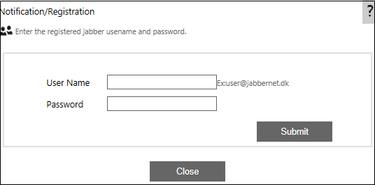

No
Notification: IM
IM Property window
We need to configure an Internet Messenger account with any 'Jabber' server. This account will be used to send notifications in the form of instant messages.

Steps for configuring the IM property:
- Register any MSN/Yahoo/ICQ/Gmail Account with the Jabber server(Ex: Jaim.at,Jabbernet.dk). Registration can be done using any of the freely available jabber client softwares like Exodus, Jaim.
- Once the registration is completed then sending messages to any IM clients is possible.
- AVEVA Work Tasks requires the jabber account that is already registered and the IM IDs to which the message needs to be sent. The IM IDs will retrieved from the data source provider.
For more details about Configuration of Instant Message to send notification, click here.